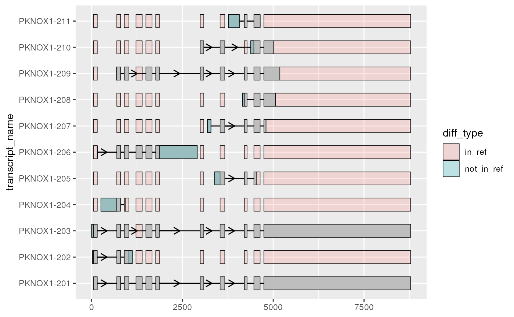
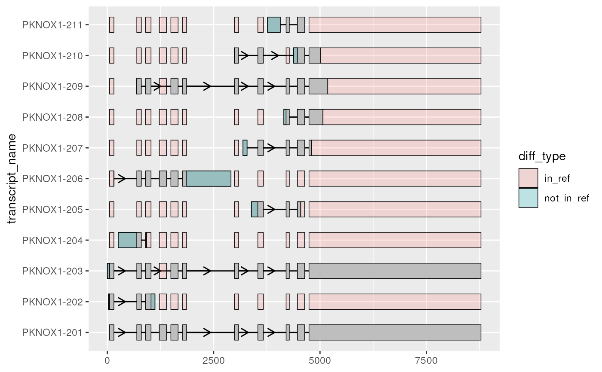

Improve transcript structure visualization by shortening gaps
Source:R/shorten_gaps.R
shorten_gaps.RdFor a given set of exons and introns, shorten_gaps() reduces the width of
gaps (regions that do not overlap any exons) to a user-inputted
target_gap_width. This can be useful when visualizing transcripts that have
long introns, to hone in on the regions of interest (i.e. exons) and better
compare between transcript structures.
Arguments
- exons
data.frame()contains exons which can originate from multiple transcripts differentiated bygroup_var.- introns
data.frame()the intron co-ordinates corresponding to the inputexons. This can be created by applyingto_intron()to theexons. If introns originate from multiple transcripts, they must be differentiated usinggroup_var. If a user is not usingto_intron(), they must make sure intron start/ends are defined precisely as the adjacent exon boundaries (rather than exon end + 1 and exon start - 1).- group_var
character()if input data originates from more than 1 transcript,group_varmust specify the column that differentiates transcripts (e.g. "transcript_id").- target_gap_width
integer()the width in base pairs to shorten the gaps to.
Value
data.frame() contains the re-scaled co-ordinates of introns and
exons of each input transcript with shortened gaps.
Details
After shorten_gaps() reduces the size of gaps, it will re-scale exons and
introns to preserve exon alignment. This process will only reduce the width
of input introns, never exons. Importantly, the outputted re-scaled
co-ordinates should only be used for visualization as they will not match the
original genomic coordinates.
Examples
library(magrittr)
library(ggplot2)
# to illustrate the package's functionality
# ggtranscript includes example transcript annotation
pknox1_annotation %>% head()
#> # A tibble: 6 × 8
#> seqnames start end strand type gene_name transcript_name
#> <fct> <int> <int> <fct> <fct> <chr> <chr>
#> 1 21 42974510 43033931 + gene PKNOX1 NA
#> 2 21 42974510 43033931 + transcript PKNOX1 PKNOX1-203
#> 3 21 42974510 42974664 + exon PKNOX1 PKNOX1-203
#> 4 21 43004326 43004432 + exon PKNOX1 PKNOX1-203
#> 5 21 43007491 43007618 + exon PKNOX1 PKNOX1-203
#> 6 21 43013068 43013238 + exon PKNOX1 PKNOX1-203
#> # ℹ 1 more variable: transcript_biotype <chr>
# extract exons
pknox1_exons <- pknox1_annotation %>% dplyr::filter(type == "exon")
pknox1_exons %>% head()
#> # A tibble: 6 × 8
#> seqnames start end strand type gene_name transcript_name
#> <fct> <int> <int> <fct> <fct> <chr> <chr>
#> 1 21 42974510 42974664 + exon PKNOX1 PKNOX1-203
#> 2 21 43004326 43004432 + exon PKNOX1 PKNOX1-203
#> 3 21 43007491 43007618 + exon PKNOX1 PKNOX1-203
#> 4 21 43013068 43013238 + exon PKNOX1 PKNOX1-203
#> 5 21 43016908 43017007 + exon PKNOX1 PKNOX1-203
#> 6 21 43018133 43018230 + exon PKNOX1 PKNOX1-203
#> # ℹ 1 more variable: transcript_biotype <chr>
# to_intron() is a helper function included in ggtranscript
# which is useful for converting exon co-ordinates to introns
pknox1_introns <- pknox1_exons %>% to_intron(group_var = "transcript_name")
pknox1_introns %>% head()
#> # A tibble: 6 × 8
#> seqnames strand type gene_name transcript_name transcript_biotype start
#> <fct> <fct> <chr> <chr> <chr> <chr> <int>
#> 1 21 + intron PKNOX1 PKNOX1-203 protein_coding 42974664
#> 2 21 + intron PKNOX1 PKNOX1-202 retained_intron 42974664
#> 3 21 + intron PKNOX1 PKNOX1-201 protein_coding 42974664
#> 4 21 + intron PKNOX1 PKNOX1-206 retained_intron 42974664
#> 5 21 + intron PKNOX1 PKNOX1-204 retained_intron 43004432
#> 6 21 + intron PKNOX1 PKNOX1-203 protein_coding 43004432
#> # ℹ 1 more variable: end <int>
# for transcripts with long introns, the exons of interest
# can be difficult to visualize clearly when using the default scale
pknox1_exons %>%
ggplot(aes(
xstart = start,
xend = end,
y = transcript_name
)) +
geom_range() +
geom_intron(
data = pknox1_introns,
arrow.min.intron.length = 3500
)
 # in such cases it can be useful to rescale the exons and introns
# using shorten_gaps() which shortens regions that do not overlap an exon
pknox1_rescaled <-
shorten_gaps(pknox1_exons, pknox1_introns, group_var = "transcript_name")
pknox1_rescaled %>% head()
#> # A tibble: 6 × 8
#> seqnames start end strand type gene_name transcript_name transcript_biotype
#> <fct> <dbl> <dbl> <fct> <chr> <chr> <chr> <chr>
#> 1 21 54 156 + exon PKNOX1 PKNOX1-201 protein_coding
#> 2 21 156 694 + intr… PKNOX1 PKNOX1-201 protein_coding
#> 3 21 694 800 + exon PKNOX1 PKNOX1-201 protein_coding
#> 4 21 800 901 + intr… PKNOX1 PKNOX1-201 protein_coding
#> 5 21 901 1028 + exon PKNOX1 PKNOX1-201 protein_coding
#> 6 21 1028 1223 + intr… PKNOX1 PKNOX1-201 protein_coding
# this allows us to visualize differences in exonic structure more clearly
pknox1_rescaled %>%
dplyr::filter(type == "exon") %>%
ggplot(aes(
xstart = start,
xend = end,
y = transcript_name
)) +
geom_range() +
geom_intron(
data = pknox1_rescaled %>% dplyr::filter(type == "intron"),
arrow.min.intron.length = 300
)
# in such cases it can be useful to rescale the exons and introns
# using shorten_gaps() which shortens regions that do not overlap an exon
pknox1_rescaled <-
shorten_gaps(pknox1_exons, pknox1_introns, group_var = "transcript_name")
pknox1_rescaled %>% head()
#> # A tibble: 6 × 8
#> seqnames start end strand type gene_name transcript_name transcript_biotype
#> <fct> <dbl> <dbl> <fct> <chr> <chr> <chr> <chr>
#> 1 21 54 156 + exon PKNOX1 PKNOX1-201 protein_coding
#> 2 21 156 694 + intr… PKNOX1 PKNOX1-201 protein_coding
#> 3 21 694 800 + exon PKNOX1 PKNOX1-201 protein_coding
#> 4 21 800 901 + intr… PKNOX1 PKNOX1-201 protein_coding
#> 5 21 901 1028 + exon PKNOX1 PKNOX1-201 protein_coding
#> 6 21 1028 1223 + intr… PKNOX1 PKNOX1-201 protein_coding
# this allows us to visualize differences in exonic structure more clearly
pknox1_rescaled %>%
dplyr::filter(type == "exon") %>%
ggplot(aes(
xstart = start,
xend = end,
y = transcript_name
)) +
geom_range() +
geom_intron(
data = pknox1_rescaled %>% dplyr::filter(type == "intron"),
arrow.min.intron.length = 300
)
 # shorten_gaps() can be used in combination with to_diff()
# to further highlight differences in exon structure
# here, all other transcripts are compared to the MANE-select transcript
pknox1_rescaled_diffs <- to_diff(
exons = pknox1_rescaled %>%
dplyr::filter(type == "exon", transcript_name != "PKNOX1-201"),
ref_exons = pknox1_rescaled %>%
dplyr::filter(type == "exon", transcript_name == "PKNOX1-201"),
group_var = "transcript_name"
)
pknox1_rescaled %>%
dplyr::filter(type == "exon") %>%
ggplot(aes(
xstart = start,
xend = end,
y = transcript_name
)) +
geom_range() +
geom_intron(
data = pknox1_rescaled %>% dplyr::filter(type == "intron"),
arrow.min.intron.length = 300
) +
geom_range(
data = pknox1_rescaled_diffs,
aes(fill = diff_type),
alpha = 0.2
)

# shorten_gaps() can be used in combination with to_diff()
# to further highlight differences in exon structure
# here, all other transcripts are compared to the MANE-select transcript
pknox1_rescaled_diffs <- to_diff(
exons = pknox1_rescaled %>%
dplyr::filter(type == "exon", transcript_name != "PKNOX1-201"),
ref_exons = pknox1_rescaled %>%
dplyr::filter(type == "exon", transcript_name == "PKNOX1-201"),
group_var = "transcript_name"
)
pknox1_rescaled %>%
dplyr::filter(type == "exon") %>%
ggplot(aes(
xstart = start,
xend = end,
y = transcript_name
)) +
geom_range() +
geom_intron(
data = pknox1_rescaled %>% dplyr::filter(type == "intron"),
arrow.min.intron.length = 300
) +
geom_range(
data = pknox1_rescaled_diffs,
aes(fill = diff_type),
alpha = 0.2
)
